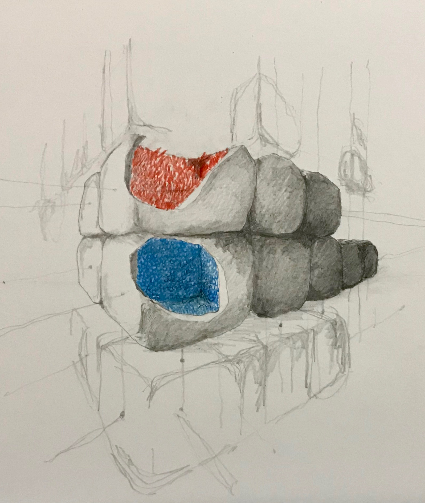
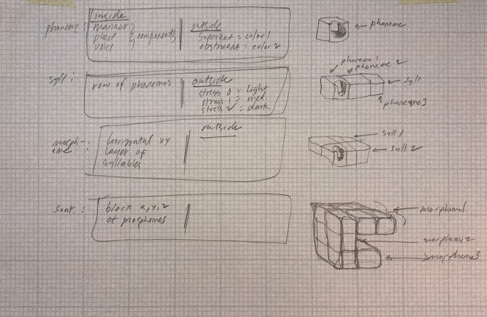

Project summary
Create one project per day for five consecutive days. Each project must include conceptualization, production and documentation.
Day 5
When we speak to each other, we create soundwaves that pass through the air and-- assuming someone's there to listen-- hit a listener's ear. But what if those sounds, rather than running their course and disappearing, were made material?
This thought exercise draws on the parallels between organic structures in the physical world and the structures of language. It's an unusual, but logically-driven, data visualization.


